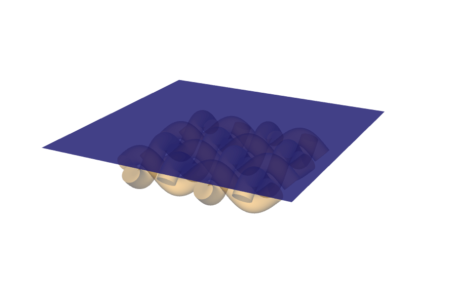
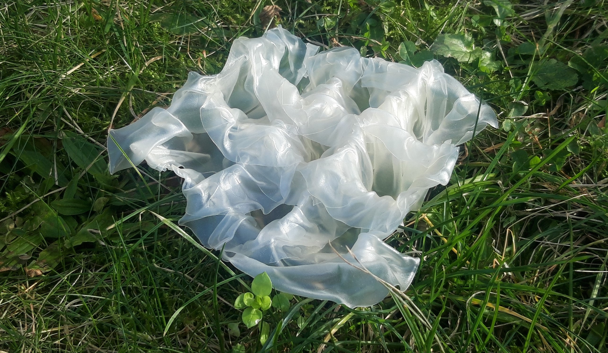
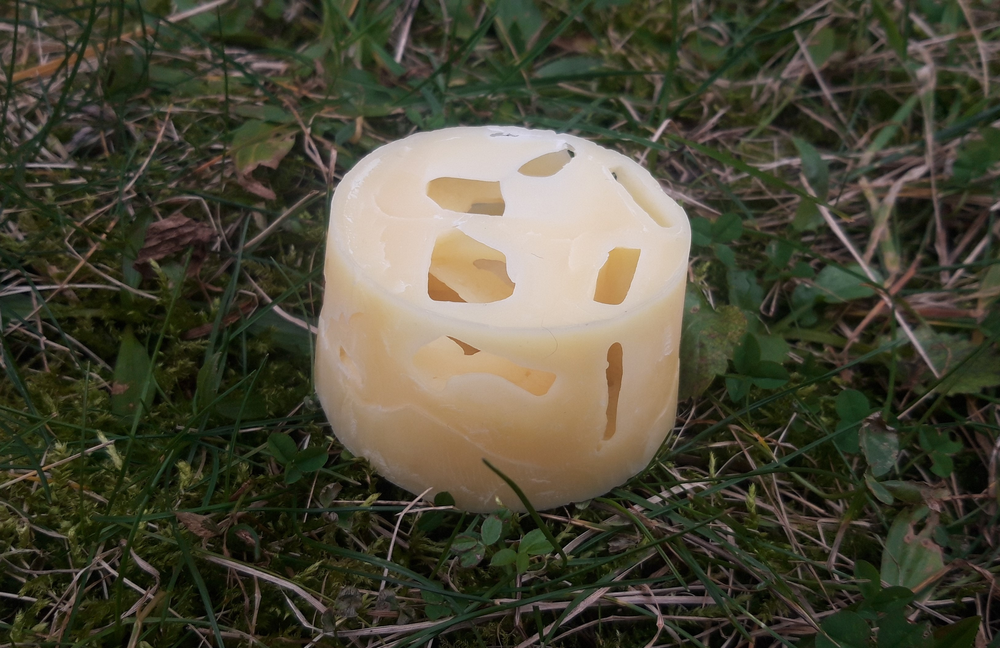

Parametric design model made with
Rhino + Grasshopper.
Credits: Materials Design, Design methods for materials scientists, IMPRS, Max Planck Institute of Colloids and Interfaces, Prof. Dr. Karola Dierichs, Pelin Asa Msc.

"Ice mould" made out of rice paper.
Credits: Materials Design, Design methods for materials scientists, IMPRS, Max Planck Institute of Colloids and Interfaces, Prof. Dr. Karola Dierichs, Pelin Asa Msc.

Foam-like structure made out of beeswax.
Credits: Materials Design, Design methods for materials scientists, IMPRS, Max Planck Institute of Colloids and Interfaces, Prof. Dr. Karola Dierichs, Pelin Asa Msc.
